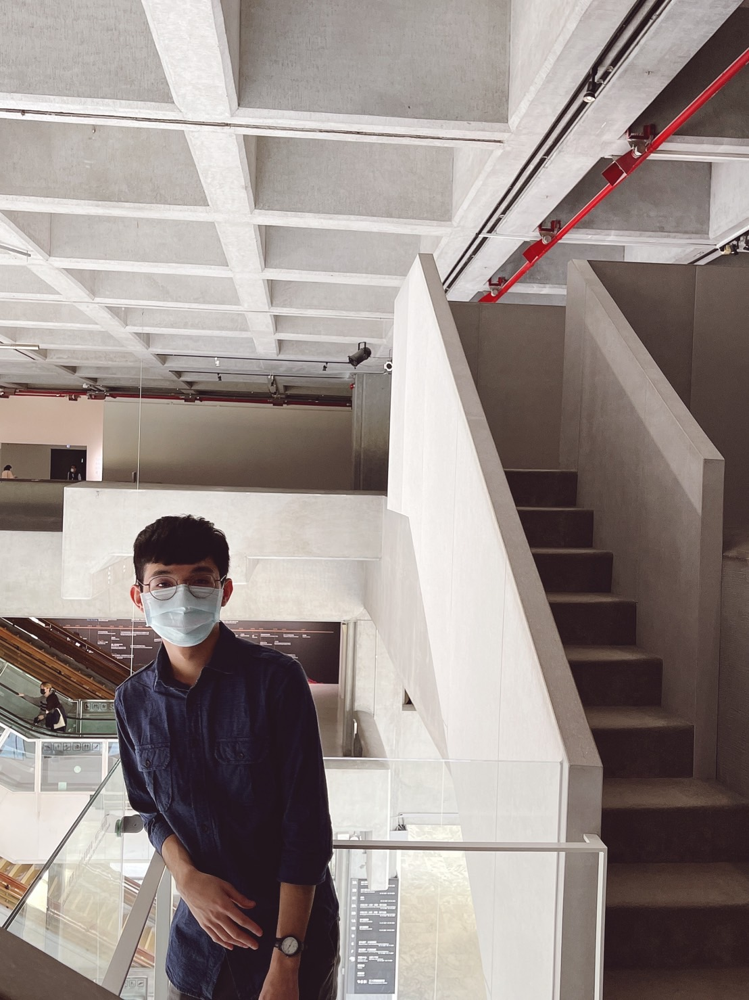

吳茂嘉 (WU, MAO-CHIA)
Higher Education
Master ,
Institute of Finance
,
National Chiao Tung University
Thesis:
Continuous Sigmoid Transform for Rule Threshold Optimization in Anti-Money Laundering
Adviser: Prof.
Tian-Shyr, Dai
Talks and Presentations
ML_introduction
CNN_model
LSTM_embedding
transformer
BERT